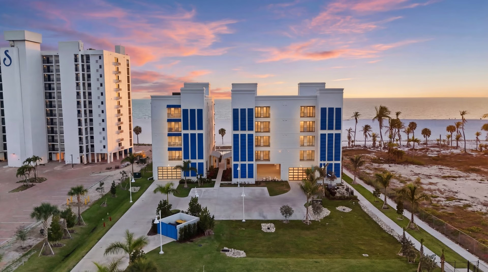

#1531993
WPB HQ
FL Offices
Hours
Crews
· Tampa
Florida’s two impact-code paths
Florida uses two distinct compliance paths for impact-rated assemblies:
HVHZ (Miami-Dade & Broward)
The High-Velocity Hurricane Zone — the highest level of code in the United States. Every assembly must hold a Miami-Dade Notice of Acceptance (NOA), proving it passed Large Missile Impact, cyclic-pressure testing, and water resistance per ASTM E331/E547. NOAs are assembly-specific — frame + glass + anchorage must be tested together.
Florida Product Approval (FPA) — rest of state
Outside HVHZ, Florida uses statewide product approval. The testing protocol is similar but less restrictive. FPA-listed assemblies are searchable in the Florida Building Commission database. Wind zones range from 130–180 mph design wind speed depending on AHJ.
When impact rating is required
Required by code for any opening in the building envelope within HVHZ, and in wind-borne debris regions across the rest of FL (typically within 1 mile of coast or specific permit areas). Most commercial work in coastal Florida specifies impact-rated assemblies whether code-required or not.
Manufacturer authority
| Manufacturer | Commercial line | Specialization |
|---|---|---|
| ESWindows / Tecnoglass | ES7000, ES8000T, ES-6500, ES-9000 | Curtainwall, window wall, sliding doors, entries |
| Euro-Wall | Vista Multi Slide, Vista Fold, Vista Pivot, DirectSet | Folding, sliding, pivot doors, storefront |
| PGT | WinGuard Aluminum | Light commercial, mixed-use, multifamily |
| Allegion | Commercial impact hardware | Egress, panic, locking |
| TGP | Fire-rated HVHZ assemblies | UL-listed HVHZ + fire-rated combo |
Selected impact glazing projects
Two completed Florida commercial projects using impact-rated assemblies described above.


Frequently asked questions
What’s the difference between impact glass and laminated glass?
All impact glass is laminated, but not all laminated glass is impact-rated. Impact-rated glass uses a thicker interlayer (typically 0.090″ PVB or 0.060″ SentryGlas) and must pass Large Missile Impact testing in a specific frame.
What’s the difference between Large Missile Impact (LMI) and Small Missile Impact (SMI)?
LMI = 9-pound 2x4 fired at 50 ft/sec; required below 30 ft elevation. SMI = 30 steel balls fired at 130 ft/sec; required above 30 ft. NOAs are typically listed for one or the other.
Do I need impact glazing for a commercial project in Florida?
Yes if you are inside HVHZ or in a wind-borne debris region. The AHJ determines applicability based on parcel location and wind zone. Send drawings and we’ll confirm code path.
Related ACG resources
Have a project?
Send drawings to ACG. We’ll review system selection, code path, and budget — no charge. Florida CGC #1531993.